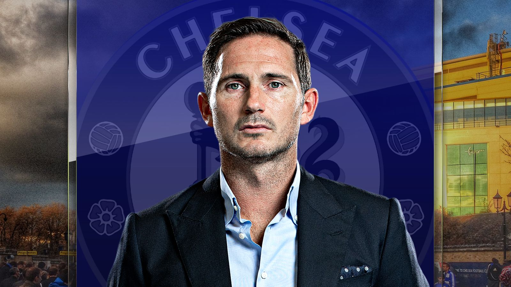

Frank James Lampard OBE (born 20 June 1978) is an English professional football manager and former player who is the head coach of Premier League club Chelsea. As a player, he is widely considered to be one of Chelsea's greatest ever players, and one of the greatest midfielders of his generation.
A creative and technically gifted box-to-box midfielder, Lampard began his career in 1995
at West Ham United, the club where his father, Frank Lampard Sr., also played.
He is best known for his time at Londo…